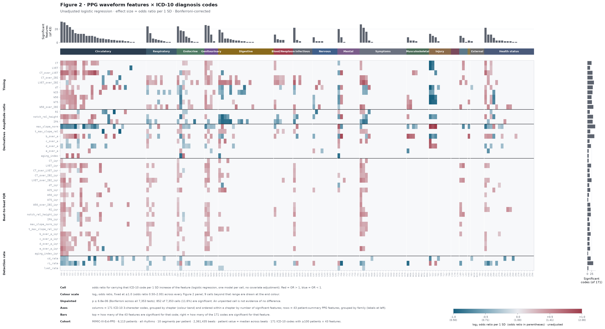
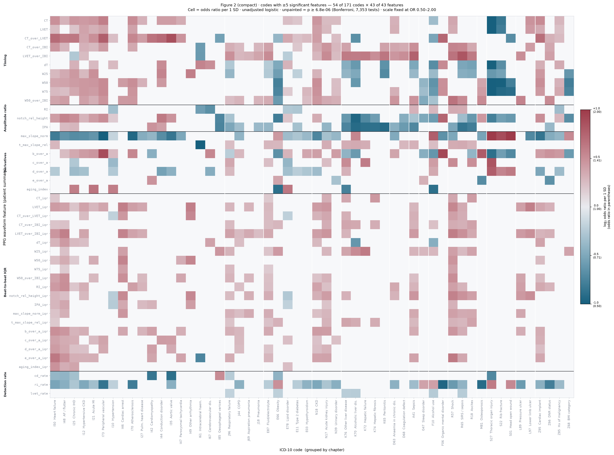
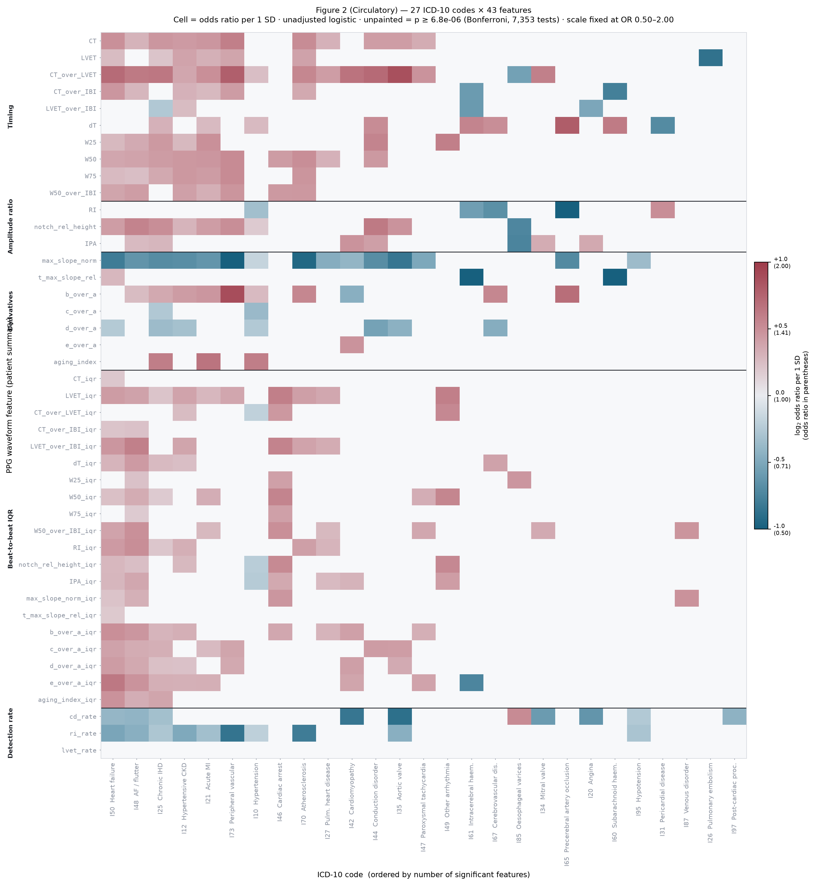
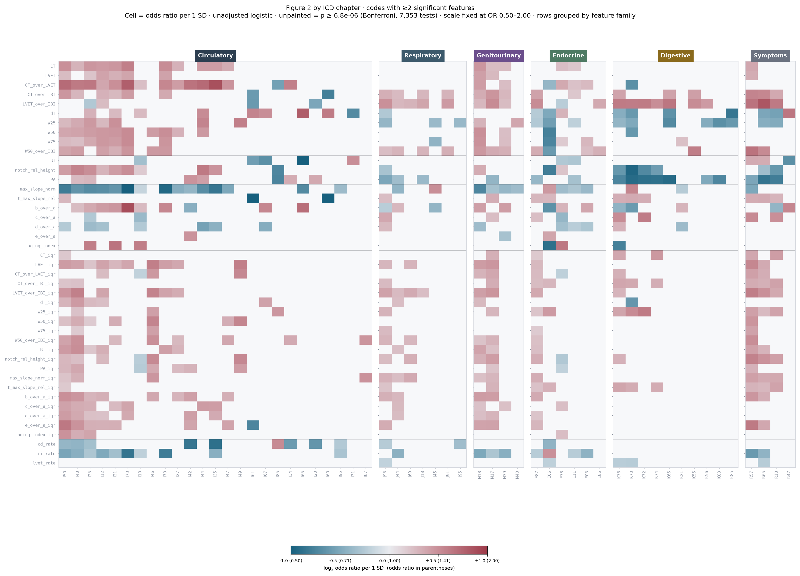
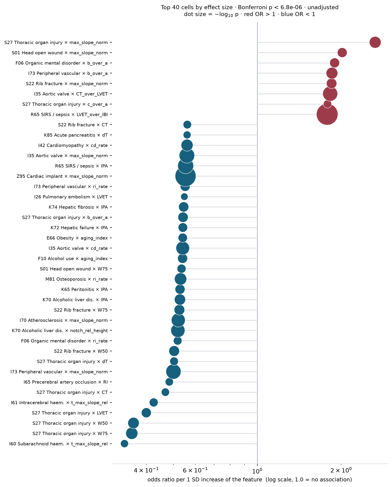
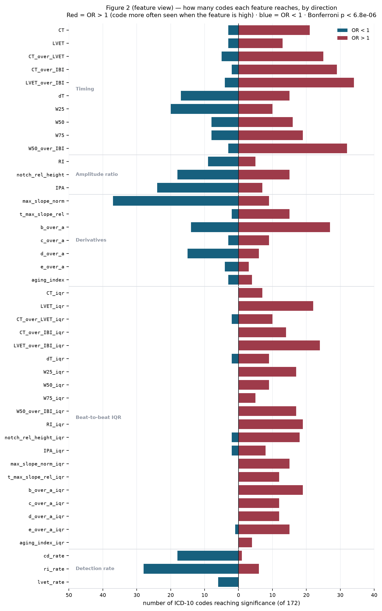

PPG_FM / 연구 / 1단계 — 파형 특징과 질환 연관
연구 · 1단계
1단계 — 계산식 파형 특징과 질환 연관
1단계는 두 부분이다. 먼저 파형에서 무엇을 재는가(4-1 ~ 4-9) — 문헌에 정립된 기준점에서 출발해 박동 단위 23개를 정의하고 환자 단위 43개로 요약한다. 그다음 질환 연관을 어떻게 보는가(4-10 ~ 4-11) — 그 43개를 171개 진단코드 전부에 같은 절차로 대어 연관의 지형을 그린다.
파형에서 무엇을 재는가
박동 하나에서 23개를 재고, 그것을 환자 단위로 요약해 43개를 만든다. 아래 모든 그림은 코호트에서 뽑은 실제 박동(125 Hz, 120샘플 = 960 ms)이며, 각 카드는 특징이 어디를 재는지 표시하고 같은 박동의 실제 계산값을 수식 아래에 적는다.
4-1. 문헌에 정립된 PPG 파형의 기준점과 특징
한 박동의 PPG에는 문헌에서 이름이 붙은 지점이 16개 있다. 원파형에 5개(on, sp, dn, dp, off), 1차 미분에 3개(u, v, w), 2차 미분에 6개(a–f), 3차 미분에 2개(p₁, p₂)다 [3]. 임상적으로 검증된 특징은 대부분 이 지점들 사이의 시간, 높이의 비, 면적의 비로 정의된다. 아래는 같은 실제 박동 위에 그 고전적 특징을 표시한 것이다.
| 특징 | 정의 | 무엇을 반영하는가 | 근거 | 우리 세트 |
|---|---|---|---|---|
| x = Asp | 수축기 진폭. on→sp 높이 | 박동량·혈관 팽창성. 접촉압·피부·기기 이득에 좌우 | Elgendi 2012 [1] | 제외 — 절대 스케일 |
| y = Adp | 이완기(반사파) 진폭. on→dp 높이 | 말초 반사파 크기 | Millasseau 2002 [4] | 비율로만 (RI) |
| RI = y/x | 반사지수. Adp/Asp | 혈관 긴장도·소동맥 반사. 혈관확장제로 감소 | Millasseau 2002 [4] · Elgendi(AI) [1] | RI |
| ΔT | sp→dp 시간 | 대동맥→말초 왕복 전파시간. 대동맥–대퇴 전파시간과 r=0.70 | Millasseau 2002 [4] | dT |
| SI = h/ΔT | 경직도지수. 신장 / ΔT | 대혈관 경직도. 연령 r=0.67, 경동맥–대퇴 PWV r=0.65 (n=87) | Millasseau 2002 [4] | 제외 — 신장 필요 |
| CT = Tsp | 상승시간. on→sp | 박출 속도·전파 특성. 판막협착에서 지연 | Elgendi 2012 [1] · pyPPG [3] · AS 지연 [7] | CT |
| Tsys / Tdia | on→dn / dn→off | 수축기·이완기 길이 | pyPPG [3] · PPG-LVET vs Doppler [8] | LVET, LVET/IBI |
| Tpwx | 피크 높이 x%에서의 폭 (10·25·33·50·66·75%) | 전신혈관저항 (W50이 진폭보다 상관 높음) | Elgendi 2012 [1] · pyPPG [3] | W25 W50 W75 |
| IPA = A₂/A₁ | 절흔 이후 면적 / 이전 면적 | 총말초저항 | Wang 2009 [6] · Elgendi 2012 [1] | IPA |
| AI = (p₂−p₁)/x | 증강지수. 후기 수축기 피크 − 초기 피크 | 파 반사·중심동맥 경직도. 압력파형 AIx의 PPG 판 | Takazawa 1998 [2] · pyPPG [3] | 미채택 — 3차 미분 |
| b/a, d/a, e/a | APG 파 진폭비 | b/a↑·d/a↓ 연령·경직도. d/a는 좌심실 후부하 | Takazawa 1998 [2] · Elgendi 2012 [1] | b/a c/a d/a e/a |
| AGI = (b−c−d−e)/a | 노화지수 | 혈관연령. 심혈관 위험·사망의 독립 예측인자로 보고 | Takazawa 1998 [2] · Charlton 2022 [5] | aging_index |
| PTT / PAT | ECG R파→PPG 도달 시간 | 혈압·PWV. PEP 오염 | Charlton 2022 [5] · 문서 7 | 제외 — ECG 필요 |
| 지점 | 어디 | 정의 (pyPPG, Goda 2024 [3]) | 검출 MAE | 우리 사용 |
|---|---|---|---|---|
| on | PPG | 수축기 상승의 시작. 보통 최소점 | 7 ms | on |
| sp | PPG | 두 onset 사이의 최대 진폭 | 5 ms | sp |
| dn | PPG | 이완기 피크가 있으면 그 직전의 국소최소, 없으면 sp와 f 사이의 변곡점 | 9 ms | dn (e파로) |
| dp | PPG | dn 이후, 박동의 0.8 지점 이전의 첫 국소최대 | — | dp |
| off | PPG | 다음 박동 상승 직전의 국소최소 (= 다음 on) | — | on2 |
| u | PPG′ | on–sp 사이 최대 = 최대 상승 기울기점 | 1 ms | k |
| v | PPG′ | u–dp 사이 최소 = 최대 하강 기울기점 | 2 ms | 미사용 |
| w | PPG′ | dn 이후 첫 국소최대 또는 변곡점 | 3 ms | fallback만 |
| a | PPG″ | on–sp 사이 최대 | 1 ms | a |
| b | PPG″ | a 이후 첫 국소최소 | 2 ms | b |
| c | PPG″ | b–e 사이 최대 국소최대, 없으면 변곡점 | 4 ms | c (변곡점 대체 없음 → NaN) |
| d | PPG″ | c–e 사이 최소 국소최소, 없으면 변곡점 | 4 ms | d (NaN 허용) |
| e | PPG″ | b 이후, dp 이전의 최대 국소최대 = 중복절흔 | 2 ms | e |
| f | PPG″ | e 이후 첫 국소최소 | 3 ms | 미사용 |
| p₁ | PPG‴ | b 이후 첫 국소최대 = 초기 수축기 피크 | 1 ms | 미사용 |
| p₂ | PPG‴ | b 이후, d 이전의 마지막 국소최소 = 후기 수축기 피크 | 2 ms | 미사용 |
MAE는 pyPPG가 PPG-BP 데이터베이스의 수기 주석 219박동에 대해 보고한 값이다 [3]. 모든 지점이 10 ms 이내이며, 미분 지점(u, a, p₁)이 원파형 지점(on, dn)보다 정확하다 — 미분이 변곡을 극값으로 바꾸기 때문이다. 우리 파이프라인은 같은 이유로 dn을 원파형이 아니라 s″의 e파에서 잡는다.
4-2. 우리 파이프라인의 기준점 검출 규칙
미분은 Savitzky–Golay 필터로 구한다 [12] — 이동창 안에서 다항식을 맞추고 그 도함수를 취하므로 잡음을 키우지 않는다. 기준점은 아래 규칙으로만 잡고, 조건을 만족하지 못하면 값을 만들지 않고 NaN으로 남긴다.
| 기호 | 이름 | 어디서 | 검출 규칙 | 이 박동 |
|---|---|---|---|---|
| on | 박동 시작 | s(t) | 수축기 피크 직전 0.45 s 구간의 최소점. t = 0 | 0 |
| sp | 수축기 피크 | s(t) | find_peaks(prominence 0.4). 정규화 후 s(sp) = 1 | 33 |
| dn | 중복절흔 | s(t) ← s″ | s″의 e파 위치. e파 실패 시 s′의 sp 이후 첫 국소최대 | 60 |
| dp | 이완기 피크(반사파) | s(t) | dn 이후 구간에서 가장 높은 국소최대. 없으면 NaN | 79 |
| k | 최대 기울기점 | s′ | [0, sp) 구간에서 s′ 최대 | 24 |
| a b c d e | APG 파 | s″ | a = [0, sp) 최대 · b = a 이후 국소최소 · e = b 이후 최대 국소최대 · c, d = b–e 사이 국소최대·국소최소 쌍(없으면 NaN) | 19 31 43 50 60 |
| N | 박동 길이 | — | 다음 onset까지 샘플 수. Δt = 1000/fs = 8 ms | 120 |
4-8. 환자 요약 — 박동 분포를 세 가지로 압축
환자 한 명은 수백 개의 박동을 갖는다. 박동 하나하나를 그대로 회귀에 넣으면 같은 사람이 수백 번 세어져 p값이 수백 자릿수로 부풀어 오른다(의사반복 [13], 문서 8). 그래서 환자마다 박동 분포를 세 숫자로 압축한다.
중앙값 — 20개
박동 단위 특징 2–21번(CT … aging_index)의 환자 내 중앙값.
평균 대신 중앙값을 쓰는 이유는 잡음 박동 몇 개가 전체를 끌지 못하게 하기 위해서다.
홀수·짝수 박동으로 나눠 두 번 계산했을 때 상관 0.97–0.99(가장 낮은 RI 0.836). 측정 자체는 안정적이다.
박동간 변동성 — 20개
같은 20개 특징의 환자 내 산포. 같은 사람 안에서 박동마다 얼마나 흔들리는가를 잰다.
검출률 — 3개
계산에 실패한 박동의 비율을 버리지 않고 특징으로 승격한다. 중복절흔 소실과 c·d파 융합은 잡음에서도, 동맥 경직에서도 나타난다 [2][5]. 결측으로 처리하면 병든 환자를 체계적으로 배제하게 된다(문서 7 §4-2).
왼쪽은 위 카드들에 쓴 예시 박동 — s″에서 b 뒤에 c(국소최대)·d(국소최소)가 실제로 있다. 오른쪽은 같은 코호트의 다른 실제 박동 —
b에서 e까지 극값 없이 한 번에 올라가 c·d가 존재하지 않는다. 이 박동은 c_over_a·d_over_a·aging_index가 NaN이고,
반사파 피크도 없어 RI·dT도 NaN이다. 환자 안에서 오른쪽 같은 박동의 비율이 1 − cd_rate다.
코호트 전체로는 박동의 48.5%에서만 c·d가 검출된다.
4-9. 환자 요약 방식 — 네 가지를 실측 비교
박동 395개(중앙값)를 환자값 하나로 줄이는 방법은 여럿이다. 어느 것이 나은지는 논증이 아니라 측정으로 갈랐다. 세 지표로 쟀다 — 재현성(홀·짝 박동으로 나눠 두 번 계산했을 때 일치도), 검출률(특징이 계산되는 환자 비율), 질환 신호(로지스틱 오즈비, Bonferroni 통과 셀).
| 방식 | 특징 | 재현성 | 최저 | 검출률 | 유의 셀 | 유의율 | |log OR| | 질환 |
|---|---|---|---|---|---|---|---|---|
| ① 박동별 → 중앙값 | 20 | 0.989 | 0.895 | 1.000 | 196 | 5.7% | 0.318 | 47 |
| ② 박동별 → 분위수 p25·p50·p75 | 60 | 0.988 | 0.866 | 1.000 | 536 | 5.2% | 0.317 | 51 |
| ③ 앙상블 평균 박동 | 20 | 0.967 | 0.790 | 0.996 | 124 | 3.6% | 0.260 | 32 |
| ④ 대표 박동 (medoid) | 20 | 0.929 | 0.734 | 0.998 | 176 | 5.1% | 0.279 | 40 |
③은 박동 파형을 겹쳐 평균한 합성 파형에서 특징을 1회 잰다(임상 맥파분석의 표준 [4]). ④는 그 환자의 중앙 특징 벡터에 가장 가까운 실제 박동 하나를 골라 잰다.
③이 탈락한 이유 — 평균이 봉우리를 지운다
| 특징 | ① 박동별 | ③ 앙상블 | ④ 대표 박동 |
|---|---|---|---|
| RI | 0.998 | 0.102 | 0.512 |
| dT | 0.998 | 0.102 | 0.512 |
| d_over_a | 0.996 | 0.413 | 0.823 |
| LVET | 1.000 | 0.993 | 0.998 |
박동마다 반사파가 나타나는 시점이 조금씩 다르다. 겹쳐 평균하면 그 봉우리가 완만한 언덕으로 뭉개져
find_peaks에 잡히지 않는다. RI와 dT가 90% 사라지고 c·d파도 절반이 날아간다.
반면 중복절흔처럼 위치가 안정적인 지점은 멀쩡하다(0.993). 앙상블은 박동간 위치가 흔들리는 특징을 지운다.
④가 ①에 못 미친 이유 — 표본이 하나
대표 박동은 실제 파형이라 반사파가 살아 있다(RI 0.512로 앙상블의 5배). 그러나 395개 중 하나만 쓰므로 그 하나가 우연히 어느 박동이냐에 값이 좌우된다. 재현성이 0.929(최저 0.734)로 가장 낮고, 따라서 효과 크기도 작아진다(0.279 vs 0.318).
질환 연관을 어떻게 보는가
특정 질환을 고르지 않고, 환자 100명 이상인 ICD-10 3자리 코드 전부에 같은 절차를 적용한다. 가설을 세워 검증하는 것이 아니라, 파형의 어느 부분이 어느 질환과 함께 움직이는지를 한 번에 훑는 구조다.
4-10. 모형 — 로지스틱 회귀, 효과 크기는 오즈비
선행 연구를 따라 질환을 결과로, 특징을 설명변수로 두는 로지스틱 회귀를 쓴다. 효과 크기는 특징 1 표준편차당 오즈비다. 공변량은 넣지 않는다 — 파형 특징 자체와 질환의 연관을 보는 것이 목적이기 때문이다.
왜 «1 표준편차당 오즈비»인가
특징 43개는 단위가 제각각이다. LVET은 밀리초, b_over_a는 무차원 비율,
cd_rate는 0–1 사이 비율이다. 원단위 그대로 회귀하면 «LVET 1 ms당 오즈비»와
«b/a 1단위당 오즈비»가 나오는데, 이 둘은 서로 비교할 수 없다 — 1 ms는 이 코호트에서 흔한 변화이지만
b/a가 1 움직이는 일은 없다. 한 그림 안에 43행을 나란히 놓으려면 공통의 자가 필요하다.
그래서 특징을 코호트 전체에서 z-표준화한다. 그러면 «1단위»가 곧 그 특징이 이 코호트에서 실제로 흩어져 있는 폭 한 칸(1 표준편차)이 된다. 어느 특징이든 «흔히 관찰되는 만큼 달라졌을 때 오즈가 몇 배가 되는가»라는 같은 질문에 답하게 되고, 그래서 셀끼리 비교할 수 있다.
β는 z가 1 늘 때 로그 오즈가 얼마나 변하는가. 지수를 취한 eβ = 오즈비가 «오즈가 몇 배가 되는가»다. β가 0이면 OR = 1 — 아무 변화 없음.
β0는 z = 0(특징이 코호트 평균)인 환자의 기준 로그 오즈. 그림에는 쓰지 않는다.
값을 어떻게 읽는가
오즈는 «있을 확률 ÷ 없을 확률»이다. 100명 중 20명이 그 코드를 가지면 오즈는 20/80 = 0.25. 오즈비는 그 오즈가 특징 1 SD당 몇 배가 되는가다.
| 오즈비 | 뜻 | 세기 |
|---|---|---|
| 2.00 | 특징이 1 SD 높은 환자에서 그 코드의 오즈가 2배 | 큰 연관 |
| 1.50 | 1.5배 | 뚜렷한 연관 |
| 1.20 | 1.2배 | 약한 연관 |
| 1.00 | 변화 없음 — 셀을 비워 두는 기준 | — |
| 0.83 | 1/1.2배 — 특징이 높을수록 그 코드가 덜 관찰된다 | 약한 역연관 |
| 0.67 | 1/1.5배 | 뚜렷한 역연관 |
| 0.50 | 1/2배 | 큰 역연관 |
오즈비는 곱으로 대칭이다 — 2.0과 0.5는 방향만 반대이고 세기가 같다. 선형 눈금에 칠하면 2.0(1에서 +1.0)이 0.5(1에서 −0.5)보다 두 배 진해 보이므로, Figure 2의 색은 log₂ 오즈비로 매핑한다. log₂ 2.0 = +1, log₂ 0.5 = −1로 좌우 대칭이 맞는다.
실제 셀로 보면
환자를 그 특징 값으로 5분위로 나누고 각 분위의 코드 보유율을 세면 오즈비가 무엇을 요약한 값인지 보인다.
| 셀 | 1분위 | 2 | 3 | 4 | 5분위 | OR / 1 SD |
|---|---|---|---|---|---|---|
| I35 대동맥판막 × CT_over_LVET | 1.9% | 2.5% | 5.0% | 6.8% | 10.9% | 1.83 |
| I73 말초혈관질환 × max_slope_norm | 8.4% | 4.3% | 2.3% | 1.5% | 0.9% | 0.50 |
위 칸은 상승시간이 박출시간에서 차지하는 비율이 큰 쪽으로 갈수록 대동맥판막 코드가 1.9%에서 10.9%로 늘어난다 — 붉은 셀. 아래 칸은 정규화 상승기울기가 큰 쪽으로 갈수록 말초혈관질환이 8.4%에서 0.9%로 줄어든다 — 파란 셀. 오즈비는 이 단조로운 기울기를 «1 SD당 몇 배»라는 한 숫자로 압축한 것이며, 그 숫자가 셀의 색이 된다.
색을 읽을 때 넘지 말아야 할 선
붉은색 = «그 특징이 질환을 일으킬 위험을 높인다»가 아니다. 붉은색이 말하는 것은 «그 특징이 1 SD 높은 환자들에서 그 진단코드가 더 자주 관찰된다»는 사실 하나뿐이다. 아래 네 가지가 그 사이를 막고 있다.
- 단면이지 발생이 아니다 — PPG는 그 환자가 이미 그 진단을 갖고 입원해 있는 동안 기록됐다. 앞으로 병에 걸릴 위험을 잰 것이 아니라, 지금 그 코드를 갖고 있을 오즈를 잰 것이다
- 방향은 모형의 관례일 뿐이다 — 질환을 결과, 특징을 설명변수로 둔 것은 오즈비를 얻기 위한 배치이지 인과의 방향이 아니다. 생리적으로는 질환이 파형을 바꾸는 쪽이 자연스럽다. 대동맥판막이 좁아져 상승시간이 길어지는 것이지, 상승시간이 길어서 판막이 좁아지는 것이 아니다
- 오즈는 위험이 아니다 — 드문 코드(사례 100~200명, 유병률 2~3%)에서는 오즈비가 상대위험도에 가깝지만, 흔한 코드(I10 고혈압 46%)에서는 오즈비가 상대위험도보다 크게 나온다. «몇 배 위험»으로 옮겨 읽지 않는다
- 무보정이다 — 연령·심박수를 넣지 않았으므로 환자군 사이의 인구학적 차이가 계수에 섞여 있다. 외상(S27·S22)처럼 대조군보다 뚜렷하게 젊은 환자군에서 이 몫이 크다
그래서 이 그림이 답하는 질문은 «PPG 파형의 어느 부분이 어느 질환과 함께 움직이는가»이고, «어느 특징이 어느 병을 일으키는가»가 아니다. 1단계는 그 함께 움직임의 지형을 그리는 데까지다.
Firth 보정은 쓰지 않는다
사례가 적은 로지스틱 회귀는 계수가 과대추정되어 PheWAS 표준 도구(SAIGE·REGENIE)는 Firth 벌점을 건다. 우리 자료에서 실측한 결과 사례 수 최소 코드(n=100~103)에서도 계수 변화가 0.0~2.8%에 그쳤다. 사건당 변수 수(EPV)가 14라 보정이 필요한 구간이 아니다.
다만 검정력 차이는 남는다 — 같은 특징에서 표준오차가 사례 100–150명 코드는 0.109, 1,000명 이상은 0.037로 3배다. 171개 코드의 40%(69개)가 사례 200명 미만이다.
4-11. 선행 연구는 어떻게 하는가 — 그리고 그 방식으로 산출한 Figure 2
| 연구 | 환자 요약 | 검정 | 효과 크기 | 다중검정 |
|---|---|---|---|---|
| ECG PheWAS EHJ Digital Health 2025 | 요약 안 함 — ECG 개별이 단위 | Mann–Whitney U | AUROC | Bonferroni (~8×10⁻⁶) |
| ECG 비지도 표현 npj Digital Medicine 2025 | 잠재공간 사영 점수 1개 | 로지스틱 | 오즈비 | Bonferroni 3.1×10⁻⁵ |
| AnyPPG arXiv 2025-11 | 입원당 세그먼트 20개 무작위 | 다중라벨 분류 | AUC | 명시 없음 |
| 맥파 dicrotic notch UK Biobank 148,310명 | CNN 점수 1개 | 로지스틱 · Cox | SD당 오즈비·위험비 | Bonferroni |
| 본 연구 | 박동별 중앙값 43개 | 로지스틱 | 오즈비 | Bonferroni 6.8×10⁻⁶ |
선행은 대부분 점수 하나를 환자값으로 쓴다. 그림의 행이 1개다. 우리는 행이 43개라 어느 파형 특징이 움직이는지가 보이지만, 검정 수가 43배다. 다중검정 기준은 선행 세 편이 모두 쓰는 Bonferroni를 그대로 따랐다 — 7,353 검정에 p < 6.8×10⁻⁶.

Figure 2. 셀 하나는 로지스틱 회귀 하나다 —
그 파형 특징이 1 SD 높을 때 그 ICD-10 코드를 갖고 있을 오즈비. 공변량 보정 없음.
붉은색 OR > 1, 파란색 OR < 1.
색 스케일은 log₂ 오즈비 ±1.0, 즉 오즈비 0.50 ~ 2.00으로 여섯 판 전부에 고정했다.
유의 셀 |log₂ OR|의 99 백분위수가 1.005여서 반올림한 값이며, 이를 넘는 9개 셀은 양 끝 색으로 눌린다.
칠하지 않은 셀은 p ≥ 6.8×10⁻⁶(Bonferroni, 7,353 검정)이며, «차이가 없다»는 증거가 아니다. 유의 852 / 7,353 (11.6%).
축 — 열은 ICD-10 3자리 171개로 장(색띠)별로 묶고 장 안에서는 유의 특징 수 내림차순.
행은 환자 요약 특징 43개로 계열별로 묶었다(왼쪽 라벨).
막대 — 상단 «Significant features (of 43)»는 그 진단코드에서 43개 특징 중 몇 개가 Bonferroni를 통과했는가.
우측 «Significant codes (of 171)»는 그 특징이 171개 코드 중 몇 개에서 통과했는가.
코호트 — MIMIC-III-Ext-PPG 6,114명 · 전 리듬 · 환자당 10세그먼트 · 236만 박동 · 환자값은 박동별 중앙값.
| 산출 | 값 |
|---|---|
| 검정 수 | 171 × 43 = 7,353 |
| Bonferroni 임계 | 6.76 × 10⁻⁶ |
| 유의 셀 | 852 (11.6%) |
| 유의 셀을 하나 이상 가진 질환 | 105 / 171 |
| 유의 셀을 하나 이상 가진 특징 | 43 / 43 |
유의 특징이 가장 넓게 퍼진 질환
| ICD-10 | 질환 | 유의 특징 수 / 43 |
|---|---|---|
| I50 | 심부전 | 31 |
| I48 | 심방세동·조동 | 30 |
| R57 | 쇼크 | 27 |
| N18 | 만성 신질환 | 26 |
| I25 | 만성 허혈성 심질환 | 26 |
| N17 | 급성 신손상 | 25 |
| J96 | 호흡부전 | 24 |
| E87 | 수분·전해질 이상 | 24 |
효과가 가장 큰 셀
| ICD-10 | 질환 | 특징 | 오즈비 | p | n |
|---|---|---|---|---|---|
| I60 | 지주막하출혈 | t_max_slope_rel | 0.33 | 3.8e−07 | 137 |
| S27 | 외상성 흉부손상 | W75 | 0.35 | 5.0e−17 | 125 |
| S27 | 외상성 흉부손상 | max_slope_norm | 2.65 | 3.3e−16 | 125 |
| I61 | 뇌내출혈 | t_max_slope_rel | 0.42 | 6.6e−09 | 284 |
| I65 | 뇌전동맥 협착 | RI | 0.48 | 1.3e−07 | 109 |
| I73 | 말초혈관질환 | max_slope_norm | 0.50 | 3.6e−27 | 212 |
| S22 | 늑골 골절 | W50 | 0.50 | 4.6e−13 | 193 |
산출: reports/02_logistic/02_association_figure2/ —
figure2_or.png · figure2_or.csv · 변형 5종 ·
노트북 02_logistic/02_association_figure2.ipynb
Figure 2 변형 — 같은 자료를 다르게 자른 판
여섯 판 모두 색 스케일을 오즈비 0.50~2.00으로 고정했다. 파일은 reports/02_logistic/02_association_figure2/에서 생성된다.
{kind=link}

{kind=link}

{kind=link}

{kind=link}

{kind=link}
